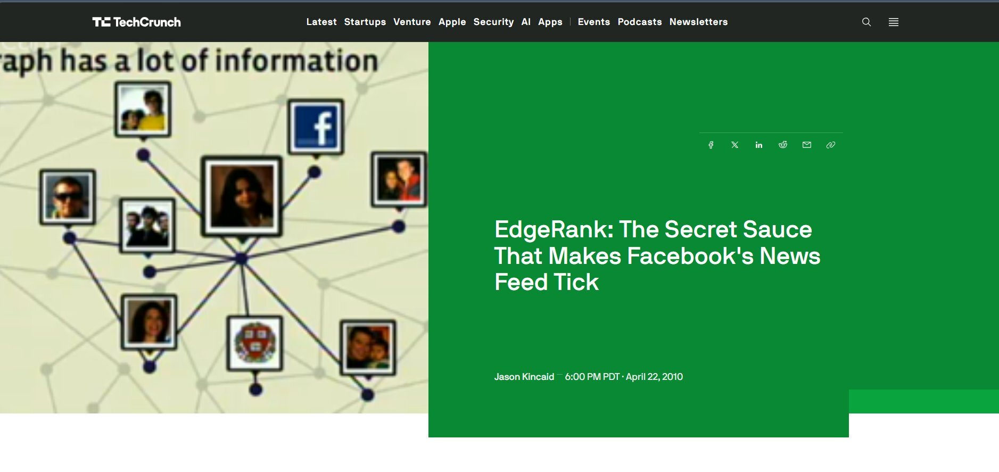

TechCrunch article from April 2010 documenting Facebook's EdgeRank announcement at F8 conference
In 2009, Facebook came out with an announcement mentioning their first algorithmic system "EdgeRank" to replace chronological news feeds on their major platform. This algorithmic system introduced three ranking factors: affinity (user relationship closeness), weight (user interaction), and time decay (content recency). Additionally, the announcement presented EdgeRank as a solution to the "information overload" their 350 million users faced.
Though what the announcement left out was the topic of revenue. Facebook was able to ensure a surplus in advertisement and engagement by essentially controlling which posts appeared. The technical linguistic choices made in the announcement shifted the system to sound as improvement for users, thus, disguising a profit incentivized decision. Furthermore, this established a pattern that multiple platforms followed; replacing most user control with an algorithmic system, marketed it as improvement for users, and never mentioned the financial motives.
Research done on algorithmic filtering years later confirmed that users experienced "surprise" as they missed posts from close friends, that is exactly what EdgeRank enabled (Rader, 2017). In conclusion, Facebook's EdgeRank laid the foundation for engagement maximizing systems that has lead up to systems like TikTok's For You Page.
Kincaid, Jason. "EdgeRank: The Secret Sauce That Makes Facebook's News Feed Tick." TechCrunch, 23 Apr. 2010, techcrunch.com/2010/04/22/facebook-edgerank/.
Solberg, Allison. "The Evolution of the Facebook Algorithm: What It Means for Your Social Strategy." Social Media Today, 28 Aug. 2015, www.socialmediatoday.com/social-business/iamsolberg/2015-08-27/evolution-facebook-algorithm-what-it-means-your-social.
Note: Facebook's original announcement from 2009 is no longer publicly accessible. So, the exhibit relies on existing tech journalism like the (Kincaid 2010) and (Solberg 2015) to show EdgeRank's introduction.